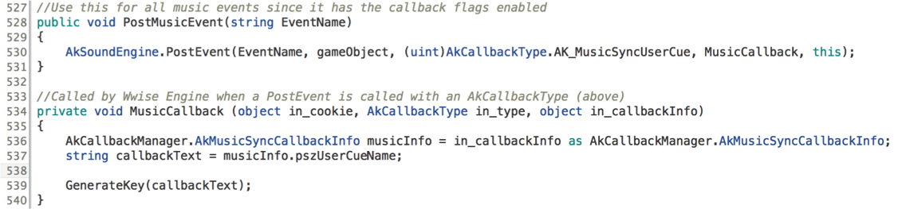

Unity Animation Capture Tool
2015
Peggle Blast! Peg Hits and the Music System
2015
Note: This post assumes some knowledge of Wwise and Unity.
In Peggle Blast, our goal was to create a music system that was tightly integrated
with gameplay. Similar to Peggle 2, we wanted every peg hit sound to play harmoniously with the music segment that was currently playing. As Guy Whitmore began experimenting with how music would progress, it became clear that the music would be changing key and/or scale a lot (every shot, if not more). In Peggle 2, peg hit sounds were handled by creating unique playlists in Wwise for each music segment that could be played, including a unique wav file for each peg hit note. We wanted to iterate on this system to reduce implementation time for each new music segment. As Jaclyn Shumate mentioned in a previous post, we also didn’t have the memory to use a unique wav file for each peg hit. Our solution involved MIDI and User Cues in Wwise’s Music Callback System. Let’s take a look at how we got there.
First things first. A single ‘Play Music’ event is triggered immediately on app launch, which starts the music’s global container. From there, a master music switch acts as a state machine to control the active music segment. Each gameplay segment (any music that could be playing when a peg was hit) contains one or more User Cue text (strings) with information about the segment’s musical key, scale, and the range of notes to be played by peg hits. These User Cue strings are located at the beginning of the segment, and anywhere else in the middle of the segment that the music changes
key/scale. Here's an example:

During gameplay, these strings are passed to Unity whenever they’re encountered by the Wwise playback timeline. This is handled by our Music Callback function, linked below. If you don’t look at lot of code, let’s step through it quickly. First the PostMusicEvent function (line 528) is used to trigger a Wwise Event with the specific User Cue Music Callback flag enabled (line 530). This tells Wwise to do something specific anytime it
reaches one of those User Cues: in this case, call the MusicCallback function.
When a User Cue is reached, Wwise calls the MusicCallback function (line 534) and passes it a few variables (in_cookie, in_type, and in_callbackInfo). The only one we really need is in_callbackInfo, which will have the text contained in the User Cue. We have to do a little manipulation (line 536) to get that variable into a type Unity will recognize, since it is passed as a generic object. From there, we just look at one of the properties of musicInfo, the User Cue Name, and assign it to the callbackText
variable (line 537). We’re ready to use that string to assign the new music key in the GenerateKey function, described next.

As Guy started writing the different sections of gameplay music, it became clear that we’d need several scales in all of the keys (A through G#). Even if we did create the lists of notes for each key/scale combination manually, we really didn’t want to have to go back and add more every time Guy wrote a new section in a different key or scale. Instead, we generated each set of notes in real-time as soon as the User Cue was passed from Wwise. We did this by converting each scale to it’s numerical set of steps, a Major scale being ‘2 2 1 2 2 2 1’ to represent the whole/half step intervals. Here are some other scales:

Right off the bat we had all of these 48 key/scale combinations ready to use, and creating a new scale was as simple as defining a new element in the list. To get the actual set of notes, we start on the Key’s first MIDI equivalent (eg: ‘G’ = 7), and add the appropriate intervals as defined in the new scale. This is all done in GenerateKey (link below), which gets passed the User Cue text, discussed above. We won’t step through this code in detail; it separates out the different parts of the User Cue text
and applies the math for the new key/scale just described.

When the player starts a new shot and hits a peg, we play the first note (assigned by the User Cue) and move to the next note in the list with each peg hit. Again, we wanted to avoid the implementation time and file size required by creating all 128 individual peg hit sounds. Okay, maybe we wouldn’t need all of them, but it’s worth noting that there are 2 types of peg hit sounds: regular, and orange. However many
notes we needed would have to be created for both, plus more if we ever wanted
to use different peg hit sounds in future updates. To get around this, we turn to Wwise’s relatively new MIDI feature. By creating a sample set, we turned 5 wav files into the entire set of regular peg hit notes! The orange peg sample only required an additional 4 files. The default peg set looked like this:

The current implementation of MIDI in Wwise requires the playback of an actual midi file (no real time creation via code). So we brought a midi file into our project containing a single C0 note. We attached a 0-127 RTPC to the ‘Transposition’ parameter for the sample set which gets set in Unity based on the MIDI note to be played. This transposition is done before Wwise selects the appropriate sample to use, so an RTPC value of 65 properly selects the D4 wav file (midi note 62) before pitching it up 3 half steps. So a single ‘Play Peg Hit’ event and the midi note RTPC handle all regular pegs, with an additional ‘Play Orange Peg Hit’ using the same RTPC.
Because of the live-service support for Peggle Blast after launch as well as a
very small audio footprint requirement, we implemented an expandable but
low-memory system to keep the music closely integrated with gameplay. With the
return of MIDI functionality, it will be exciting to see new creative ways it can be used beyond simply replacing music wav files. As game audio (not just music) gets more and more interactive, MIDI provides another great creative channel for real-time data coming from the game engine.